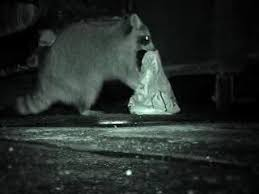

В роде енотов (Procyon) выделяют 3—4 вида, Procyon lotor — Енот-полоскун — 22 подвида, Procyon cancrivorus — Енот-ракоед;, если хотите фотка енотика, то вот она
Картинка с места преступления:  Енот за делом
| № | Вопрос | Ответ |
|---|---|---|
| 1 | Как дела? | Нормальненько |
| 2 | Что делаешь? | Таблицу |